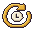

Pick a nickname between 1 and 20 characters.
Kit played
Ben skipped to
Ana paused
Ana paused
Ben skipped to
Oli is catching up
user chat stays a bubbleAna paused
Ben skipped to
960 px container: 560×315 player (max). The bezel and shelf are border-image-outset, so the boxes are exactly roomLayout's rects and nothing covers the player.
360 px viewport: 356×200 player (min), .compact drops the bezel sides and the speakers.
Live, at the live edge: the lamp blinks, back-to-live is disabled, no scrubber. Plate: generic "live" glyph + plain text.
Paused live (or behind the edge): the lamp goes out, the readout says how far behind, back-to-live lights up.
On-demand video from a seek-only source: the normal transport plus the quiet seek-only hint (glyph-only at 1×; its words are in the title and read by screen readers).
A source that can nudge its speed: no hint, just the plate.
360 px viewport (.compact): the note and the plate/hint words drop; lamp, pill, glyphs and keys stay.
Oli skipped ahead to stay in sync
Kit went back to live
Oli skipped ahead to stay in sync
Kit went back to live
1 · Slow down: you pressed the shared key too often. It rests (darker wood) and its icon becomes the timer dial, whose cream wedge drains back to the icon. The "Slow down" chip is in the mustard "only you" rim: only you are slowed.
Kit played
Your share didn't go through. Try again in
Easy! You can skip again in
Share didn't go through. Try again in 12 s.
2 · Share retry: a system line only you see (mustard bar, not the room's glow bar) and the extension popup's key icon, on the popup's plain white.

Share didn't go through. Try again in 12 s.popup at 2× (retry-32.png, drawn at 32 px, not upscaled)
Connection dropped. Reconnecting by itself: you'll be back in your seat.
The room paused your connection: lots of messages at once. Take a breather.
The room paused your connection: lots of messages at once. Take a breather.
3 · Normal drop (left): mustard lamp, plug, running dots, no button. Closed by the server (right): pause lamp, a mug ("take a breather"), still, and a Rejoin key that waits out the delay in full cream text. No rust, no warn icon.
4 · Room list: open door = come in (idle, hover). Room full (ADR 0006, 25 members): the door is shut with a hanger on the knob, the card dims, and a calm "Full" pill replaces the link.
Your share didn't go through. Try again in
Easy! You can skip again in
Ana paused
Your share didn't go through. Try again in
Easy! You can skip again in
Ana paused
Edit mode is the owner's own view: nobody else sees the grid. The key "Edit room" latches to a filled mustard "Done". On the floor: the cream/plum grid groove on every cell; the picked velvet sofa wears the closed mustard ring with its rotate and pack-away handles (hover = cream rim); the held navy beanbag fits (teal ring + dots); the held popcorn cart can't go on the snack table (dashed rust ring + hatching); wall slots for a print (free = teal ring, taken = dashed rust). Held pieces are ghosts (Pixi alpha 0.75; dithered in this PNG). The tray is a wooden drawer of cubbies: the sofa is in your hand (mustard double rim), the couch is hovered, and the footprint glyph in each cubby's corner says how much floor it takes.
Each thumbnail is the catalogue model re-cast at a smaller scale (same light, tones and plum outline), not a shrunk sprite. Seats face the camera (se); the runner shows ne. Footprint glyphs follow the facing shown: 1×2 for the two-seaters and the bookcase (se), 1×1, 3×2 for the runner (ne), wall.
Invite link: anyone with it can come in.
Copied. Paste it to a friend.
This link has expired.
Create room: the key is invite only, the door is open to everyone. Invite link: a cinema ticket. Copied stamps a teal check on the stub and the key says "Copied". Expired tears the stub off, greys the card and strikes the link, and the primary key makes a new one.
Room list and invite landing: a private room's door is shut with the key in the lock, plus the "Invite only" pill (glyph + words, never colour alone). The little house marks the host. Opening an invite to a full room reuses set (f)'s full card and says the invite itself is still good. An expired invite gets the dimmed card and the torn-ticket icon.
The switch is a door bolt: off = the knob on the left shows the open door (anyone can find the room); on = slid right showing the key (invite only). The other option is ghosted in the track and the line beside it says the state in words. Too many new rooms reuses set (f): the key rests with the timer dial and says how long. "Your rooms" rows wear the mustard "only you" line inside the room card's wood rim. The moon only means closed or closing. Closing is a two-step: the row becomes the question (charcoal glass, rust line) with the one rust key in the whole UI.
Its host closed it, or nobody came by for a while. The lights are off.
Someone’s home. Ask the host for an invite link, then paste it here.
That link doesn’t open this room any more. Ask for a new one.
Two doors, two meanings. Closed: lights out, night in the fanlight, the sconce off, no light under the door, and the moon hanger on the knob. Invite only: someone’s home (warm fanlight, lit sconce, lamplight under the door), the lock has an empty keyhole and a dashed ghost ticket hangs beside it: you need a ticket. The paste slot is that ticket’s empty outline; a bad link turns it into set (h)’s torn ticket.
The emote key is personal (night face, mustard rim), and so is its picker: a tray with a tail down to the key. Five stickers from the motion atlas, a groove, then the wave (your avatar’s own gesture, seated or standing). Keys 1-6 pick (aria-keyshortcuts + the title; no digits on the cells). Hover = a sunken well with a cream lit edge; pressed = the mustard rim. Above the avatars: the same stickers at 1×, over the name tags.
The film stops here. Thanks for watching together.
Mid-session 4004: a 1-bit plum dither (no alpha) dims the stage, and the closed card sits on top. Inside .ui-room the chrome is 1×, the same pieces at room scale.